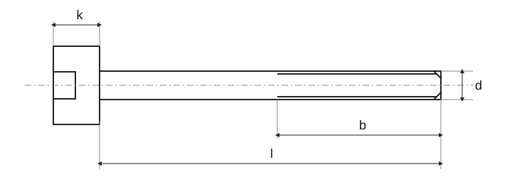

Цилиндрическая головка, внутренний шестигранник · ISO 4762 · M1.6-M12 · Размеры
Исторический источник; числовые значения и исключения не полностью сверены с действующим стандартом.

Цилиндрическая головка, внутренний шестигранник · ISO 4762 · M1.6-M12 · Размеры · P ^1)–d _s max. · M1,6 / M5
| Параметр | M1,6 | M2 | M2,5 | M3 | M4 | M5 |
|---|---|---|---|---|---|---|
| P 1) | 0,35 | 0,4 | 0,45 | 0,5 | 0,7 | 0,8 |
| b _ref.2) | 15 | 16 | 17 | 18 | 20 | 22 |
| d _k max.3) | 3 | 3,8 | 4,5 | 5,5 | 7 | 8,5 |
| d _k max.4) | 3,14 | 3,98 | 4,68 | 5,68 | 7,22 | 8,72 |
| d _k min. | 2,86 | 3,62 | 4,32 | 5,32 | 6,78 | 8,28 |
| d _a max. | 2 | 2,6 | 3,1 | 3,6 | 4,7 | 5,7 |
| d _s max. | 1,6 | 2 | 2,5 | 3 | 4 | 5 |
| d _s min. | 1,46 | 1,86 | 2,36 | 2,86 | 3,82 | 4,82 |
| e _min.5) | 1,73 | 1,73 | 2,3 | 2,87 | 3,44 | 4,58 |
| l _f max. | 0,34 | 0,51 | 0,51 | 0,51 | 0,60 | 0,60 |
| k _max. | 1,6 | 2 | 2,5 | 3 | 4 | 5 |
| k _min. | 1,46 | 1,86 | 2,36 | 2,86 | 3,82 | 4,82 |
| r _min. | 0,1 | 0,1 | 0,1 | 0,1 | 0,2 | 0,2 |
| s | 1,5 | 1,5 | 2 | 2,5 | 3 | 4 |
| s _max.6) | 1,545 | 1,545 | 2,045 | 2,56 | 3,071 | 4,084 |
| s _max.7) | 1,560 | 1,560 | 2,060 | 2,58 | 3,080 | 4,095 |
| s _min. | 1,520 | 1,520 | 2,020 | 2,52 | 3,020 | 4,020 |
| t _min. | 0,7 | 1 | 1,1 | 1,3 | 2,00 | 2,50 |
| v _max. | 0,16 | 0,2 | 0,25 | 0,3 | 0,4 | 0,5 |
| d _w min. | 2,72 | 3,48 | 4,18 | 5,07 | 6,53 | 8,03 |
| w _min. | 0,55 | 0,55 | 0,85 | 1,15 | 1,4 | 1,9 |
Цилиндрическая головка, внутренний шестигранник · ISO 4762 · M1.6-M12 · Размеры · P ^1)–d _s max. · M6 / M12
| Параметр | M6 | M8 | M10 | M12 |
|---|---|---|---|---|
| P 1) | 1 | 1,25 | 1,5 | 1,75 |
| b _ref.2) | 24 | 28 | 32 | 36 |
| d _k max.3) | 10 | 13 | 16 | 18 |
| d _k max.4) | 10,22 | 13,27 | 16,27 | 18,27 |
| d _k min. | 9,78 | 12,73 | 15,73 | 17,73 |
| d _a max. | 6,8 | 9,2 | 11,2 | 13,7 |
| d _s max. | 6 | 8 | 10 | 12 |
| d _s min. | 5,82 | 7,78 | 9,78 | 11,73 |
| e _min.5) | 5,72 | 6,86 | 9,15 | 11,43 |
| l _f max. | 0,68 | 1,02 | 1,02 | 1,45 |
| k _max. | 6 | 8 | 10 | 12 |
| k _min. | 5,70 | 7,64 | 9,64 | 11,57 |
| r _min. | 0,25 | 0,4 | 0,4 | 0,6 |
| s | 5 | 6 | 8 | 10 |
| s _max.6) | 5,084 | 6,095 | 8,115 | 10,115 |
| s _max.7) | 5,140 | 6,140 | 8,175 | 10,175 |
| s _min. | 5,020 | 6,020 | 8,025 | 10,025 |
| t _min. | 3,00 | 4,00 | 5 | 6 |
| v _max. | 0,6 | 0,8 | 1 | 1,2 |
| d _w min. | 9,38 | 12,33 | 15,33 | 17,23 |
| w _min. | 2,3 | 3,3 | 4 | 4,8 |